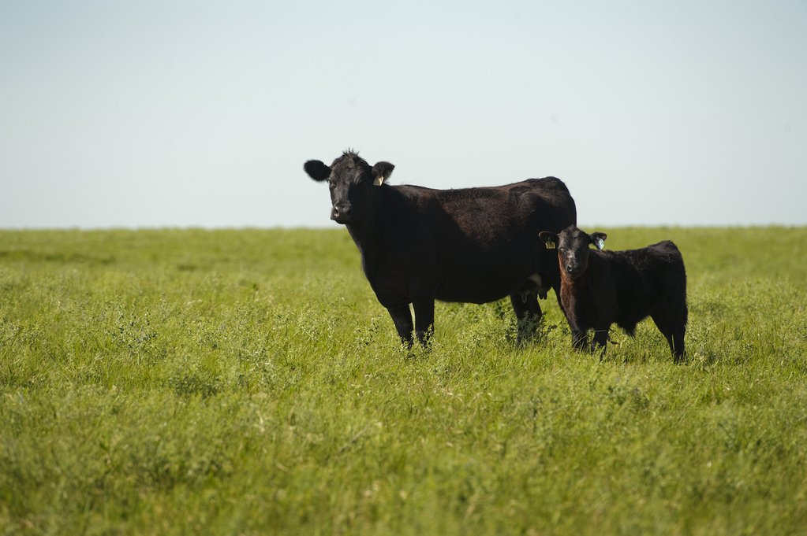

About Us
AK Harding brings you organically raised angus beef from our small farm in the northern tier of Pennsylvania
All of our cows are born and raised naturally here on our farm. They are grass-fed from the crops and hay that are grown on our land. The definition of grass-fed that we follow is defined by the American Grassfed Association (AGA):
"The AGA defines grass-fed products from ruminants, including cattle, bison, goats and sheep, as those food products from animals that have eaten nothing but their mother's milk and fresh grass or grass-type hay from their birth till harvest."Our pastures and baled hay consists of multiple grass and legume (clover) species providing all the energy and protein a cow could want! If you've never cooked grass-fed beef, it is a different experience than your basic store bought meat.
Rest easy knowing that beef from our farm is from cattle that have been raised naturally and humanely. Black Angus cattle have long been known to create beef that is tender with a superior flavor. Most Black Angus programs select their cattle solely on hide color. Our cattle are hand-selected to be the best of the best and represent true Black Angus genetics.
Contact us if you are interested in buying beef from one of our cows in the near future!